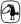

Ursula K. Le Guin
AYA TIRMANMAK
ve diğer öyküler
Ursula Kroeber LeGuin, 1929'da Kalifomiya'da doğdu. Babası ünlü antropolog Alfred Kroeber,annesi yazar Theodora Kroeber'dir. Radcliff ve Columbia üniversitelerinde edebiyat eğitimi gördü. l950'li yıllarda fantastik öyküler ve romanlar yazmaya başladı. 1962'de ilk bilimkurgu öyküsü yayımlandı. 1974 tarihli Mülksüzler'e kadar altı bilimkurgu romanı yazdı. Bu tarihten sonra zaman zaman bilimkurgu öyküleri yazmakla birlikte romanlarında daha ziyade yarı gerçekçi/yarı fantastik temalar işledi.
Kısa hikaye,deneme,şiir,çocuk kitapları ve roman türlerinde eserler veren LeGuin'in aldığı çok sayıda edebiyat ödülü arasında Ulusal Kitap Ödülü, beş kez Hugo ve beş kez Nebula Ödülü, Kafka Ödülü ve PEN/Malamud Ödülü bulunuyor. LeGuin halen Portland, Oregon'da yaşıyor.
Türkçede Mülksüzler ile başladığımız LeGuin edebiyatı, okurdan gördüğü ilgiyle birlikte geniş bir koleksiyon oluşturdu. "Yerdeniz"dizisi,yazarın ilk dört kitaptan on yıl sonra yazdığı Öteki Rüzgar'1a bir beşleme haline geldi. Kısa hikayelerden oluşan Yerdeniz Öyküleri de beşlemeyle aynı coğrafyada geçiyor.
LeGuin'in düzyazılarını merak eden okurlarımıza,edebiyat konulu makale ve denemelerini bir araya getirdiğimiz Kadınlar Rüyalar Ejderhalar başlıklı seçkiyi öneriyoruz.
